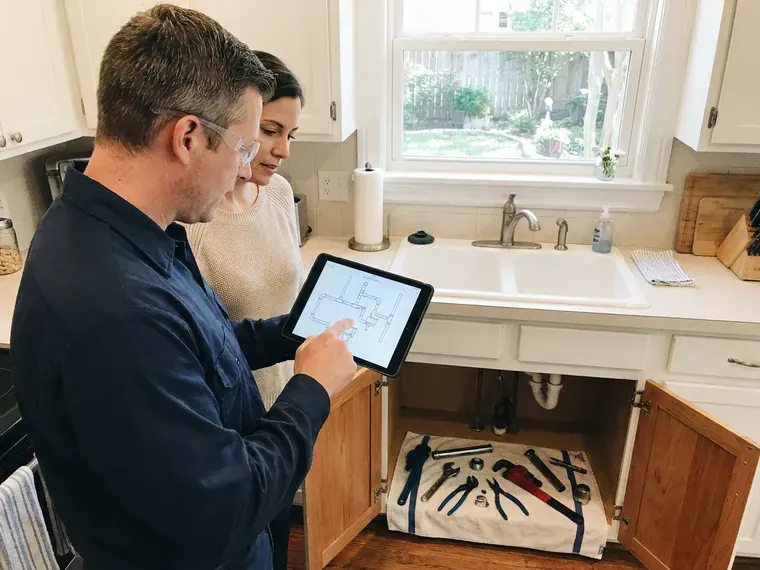

Sump Pump Maintenance in Arvada, CO
Get the sump pump checked ahead of the wet season in Arvada, CO. One visit covers the pump, float, valve and battery backup.
- Licensed and Insured
- Prompt Service Calls
- Zoeller and Liberty Parts in Stock
- Battery Backup Checks

Schedule Sump Pump Maintenance Before the Rainy Season in Arvada, CO
One visit covers the pit, float, check valve and backup, and we can replace worn parts before we leave.
Sump Pump Maintenance for Basements and Crawlspaces in Arvada, CO
GFR Plumbing gets a lot of calls from homeowners whose pump sat dry for months and then would not start the first night of a heavy storm. Dry seals crack, and floats hang up on the pit wall. A yearly visit before the wet season catches both problems.
Work we handle every week:
- Motor amperage readings with a clamp-on meter
- Float switch adjustment and repair
- Battery backup load tests and replacements

Additional Plumbing Maintenance Services in Arvada, CO
Our maintenance and specialty plumbing services in Arvada, CO protect your home year-round and extend the life of every system.


Customers
Why Choose GFR Plumbing for Sump Pump Maintenance in Arvada, CO?
Dry months are when sump pumps get forgotten, and forgotten pumps are the ones that fail the night they are needed. Our test uses a full pit of water, the same way a storm would load it.
- Cheaper Repairs, A float or check valve replaced on a dry day is cheap next to an emergency call in the middle of a storm.
- Cost Savings, Routine service costs far less than the cleanup, flooring and drywall work after a single flooded weekend.
- Longer Pump Life, Clean pits and free floats mean shorter, fewer cycles, and the motor lasts closer to ten years.
Citywide Coverage
Older districts in Arvada tend to have shallow pits and clay tile drains, while newer homes often have plastic basins and perforated drain pipe. Both get the same visit.
Experienced Team
Pedestal pumps and submersibles fail in different ways, and our techs know the tells for each. On a pedestal, the bearings and float rod go first. Submersibles usually fail at the seal or the switch, and that only shows up when the pump is pulled out of the pit and looked at closely.
Safety-First Approach
Manufacturer specs set the outlet type and minimum pit size for each pump. Following them, plus local code, keeps the warranty intact.
Trusted Certified Arvada Plumbing Services Professionals
At GFR Plumbing, we are proud to offer certified plumbing services throughout Arvada, CO. Those papers on the wall mean something. Our plumbers hold recognized industry credentials, and they follow strict safety and quality rules on every repair, installation and maintenance call we run.
Call Us Now PHCC Plumbing Contractor Recognition
PHCC Plumbing Contractor Recognition Better Business Bureau (BBB) Accreditation
Better Business Bureau (BBB) Accreditation Angi Certified Pro
Angi Certified Pro ISO 9001 Quality Management Certification
ISO 9001 Quality Management CertificationSump Pump Maintenance in Arvada, CO: What We Check
Float Switch Inspection in Arvada, CO
The float switch tells the pump when to start and stop, and a float with too little travel between on and off makes the pump short cycle dozens of times an hour. Our plumber watches the float rise and drop through a complete cycle. Next we adjust the on and off levels so each run is longer and the starts are fewer.

Elevator Pit and Garage Pumps in Arvada
Elevator pits, parking garages and mechanical rooms all collect water that has nowhere to go by gravity, so a pump has to lift it out. In elevator pits, the pump usually needs an oil-sensing control so it will not discharge hydraulic fluid. We test duplex systems and high-water alarms on a set schedule. The property manager gets a copy of every log.
Pedestal Sump Pump Service in Arvada, CO
Pedestal pumps keep the motor up on a column above the water, so the wear shows up in the shaft, the bearings and the float rod. We check the rod for bends and the stops for slipping. Bearings get a listen. A motor that whines or rattles on startup is usually close to done.
Home Sump Pump Service in Arvada
A typical house pit is about 18 inches across and two feet deep, and most of what goes wrong happens inside it. Our plumber lifts the pump out, cleans the screen and empties the sediment from the bottom. Then we run a full water test. Expansive clay soils are a well-known problem in parts of Colorado, swelling with moisture and lifting slabs, basement floors, and buried pipes.
Emergency Sump Pump Diagnostics in Arvada, CO
Grinding, clicking and a hum with no water moving each point to a different failure. Our plumber works from the outlet and cord to the float and then the motor. A tripped GFCI is a quick fix. A seized motor means a new pump, and we keep replacements on the truck so the pit is never left unprotected overnight.
Zoeller and Wayne Sump Pump Maintenance in Arvada
Brand matters less than people think, but parts do not cross over cleanly between Zoeller, Wayne, Liberty and Little Giant. Our plumber reads the model number off the label and orders the matching float or seal kit. A submersible Zoeller and a pedestal Wayne need different checks. We know both.
Crawlspace and Window Well Pumps in Arvada, CO
Not every sump sits in a basement. Plenty of crawlspaces and deep window wells use a small pump to clear storm runoff. Our plumber clears the screen, tests the float and traces the discharge to daylight or an approved drain, since a line that ends under the house only relocates the water. Hard freezes are a normal part of winter in Colorado, and pipes in exterior walls, crawlspaces, and garages are particularly vulnerable.

Backup Pump Battery Service in Arvada
Outages and heavy rain tend to arrive together. The backup takes over when the primary loses power or simply stops. We load test the battery, check the charger and the alarm, and run the backup by itself with the main pump unplugged. Expect a new battery every three to five years.
Local Sump Pump Maintenance Near Me in Arvada, CO
Our Arvada plumbers have serviced Zoeller, Liberty, Wayne and Little Giant pumps in all kinds of pits, from old fieldstone basements to new poured walls. The price is set before we pick up a tool.
Searching for sump pump maintenance near me in Arvada, CO usually means rain is in the forecast. Every truck carries floats, check valves and a few spare pumps. Nearly every call is a single trip, with the pump reinstalled and tested before we leave.
GFR Plumbing at a Glance
- Licensed and insured plumbers serving Arvada, CO
- Same-day appointments and 24/7 emergency response
- Clear written estimates, no hidden fees
- 4.8-star rated by 750+ Colorado customers
Arvada Map
Arvada Information
- Population
- 121,414
- Area codes
- 303/720/970
- Service area
- Arvada and communities within 40 miles
- Nearby
- Westminster, Lakewood, Broomfield, Lafayette
Sudden summer thunderstorms bring flash flooding and hail, and heavy runoff can overwhelm storm drains and sewer lines. Below-grade rooms in Arvada, CO depend on a pump that actually starts when the pit fills.
Expert Services
Reach out to GFR Plumbing for reliable plumbing work done by licensed pros in Arvada, CO.
Our Specialized Plumbing Services in Arvada, CO
At GFR Plumbing, you get every kind of plumbing service from one company across Arvada, CO. We go from leak detection all the way to full system installations, for homes and commercial buildings, and we do it quickly at a fair price. Explore our core services below:


What Happens During Sump Pump Maintenance in Arvada, CO
Our plumber starts at the outlet, moves to the pump and finishes at the discharge line, in that order.
Request a Quote
Reach us at (720) 727-9398 or through the website. A few quick questions about your pump, then we book a time.
On-Site Inspection
Our licensed plumber shows up on time and looks over the pump, the pit and the discharge line. Cracks, rust and loose fittings get noted first.
System Testing
We run the pump with water to test the float and check valve. Battery backups get tested on their own with the main pump unplugged.
Frequently Asked Questions About Sump Pump Maintenance in Arvada
Expect $100 to $250 in Arvada, CO, with the price set by how complex the system is and whether minor repairs come up. Inspection, cleaning and testing are included. Bigger repairs get their own quote after diagnosis.
Yes, pour a five-gallon bucket of water into the pit and watch the pump kick on and drain it. Our visit goes further, with pit cleaning, a check valve test, amp readings and a backup test.
Routine maintenance in Arvada, CO usually does not need a permit. Replacing the whole unit, rerouting the discharge line or adding a new electrical circuit sometimes does, depending on the local building department. You will know before we begin if a permit applies.
Without a working battery or water-powered backup, the pit keeps filling during an outage and eventually spills over onto the basement floor. During a heavy rain, that can happen in less than an hour. Water-powered backups need city water pressure, so they do not work on a private well.
Seven to ten years is normal for a quality pump. Pumps that sit dry for long stretches can seize sooner, which is why we test them in dry months too.
Most maintenance and simple part swaps need no permit. Swapping the whole pump, adding wiring or rerouting the discharge can trigger a permit locally. We handle the paperwork when one is needed.
Most visits run 45 minutes to an hour. Swapping a check valve or float on the same trip adds a little time.
Not every house needs one. Homes with basements, crawlspaces, below-grade garages or low lots are the ones that usually do. Sudden summer thunderstorms bring flash flooding and hail, and heavy runoff can overwhelm storm drains and sewer lines.
Hear From Customers Who Hired Our Plumbing Experts
Patricia H.
We had a slab leak that two other companies could not find. GFR Plumbing located it in under an hour with a listening device. They rerouted the line through the attic instead of breaking up the floor, so we kept our kitchen tile.
Slab Leak Repair · Lakewood, CONathan E.
Our tankless heater kept throwing an error code and shutting off mid shower. The tech flushed the heat exchanger, which was full of scale, and replaced a bad flow sensor. Hot water has been steady for half a year now.
Water Heater Repair · Broomfield, CODiane F.
My kitchen faucet had dripped for months and I finally got tired of hearing it at night. GFR Plumbing came out the next morning, replaced the cartridge and the O rings, and tightened a loose base that was letting water under the sink.
Faucet Repair · Thornton, CO
Megan L.
Our upstairs tub drained so slowly that every shower turned into a bath. GFR Plumbing pulled a wad of hair out of the stopper and then snaked the line past the trap. Three months later it still drains fast.
Drain Cleaning · Westminster, COGreg S.
I manage a small strip center with six tenants. GFR Plumbing handles our annual backflow testing and fixed a recurring clog in the shared sewer line that had been backing into the nail salon. Their reports come in clean and on time.
Commercial Plumbing · Lafayette, COTyler J.
We bought a taller comfort height toilet for my dad, who just had knee surgery. The plumber pulled the old one, found the flange was cracked, and replaced it before setting the new bowl. Took about two hours.
Toilet Installation · Boulder, CO